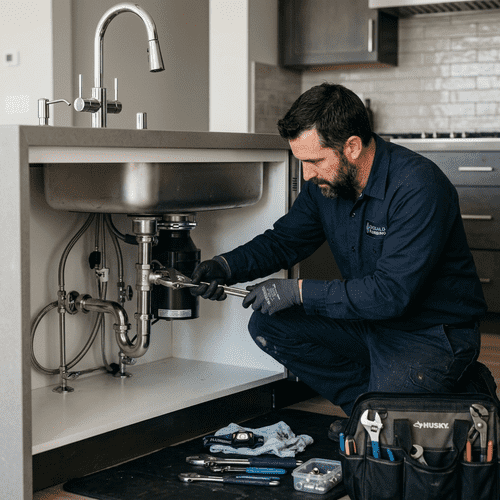

Soluții rapide și fiabile pentru scurgeri, chiuvete și instalații. Servim toată zona Cluj și împrejurimile sale.

Ne concentrăm pe soluții rapide și eficiente pentru sistemele tale de apă și canalizare. Fie că este vorba de bucătărie sau baie, asigurăm funcționarea fără probleme a utilităților tale zilnice.
Verificăm instalațiile ascunse, detectăm scurgerile și te ajutăm să alegi cele mai bune accesorii pentru economii de apă și mai puține reparații viitoare.
Trimite rapid o poză sau un video al scurgerii sau al aparatului de instalat și primești soluția și oferta noastră instant.
Trimite mesaj acum